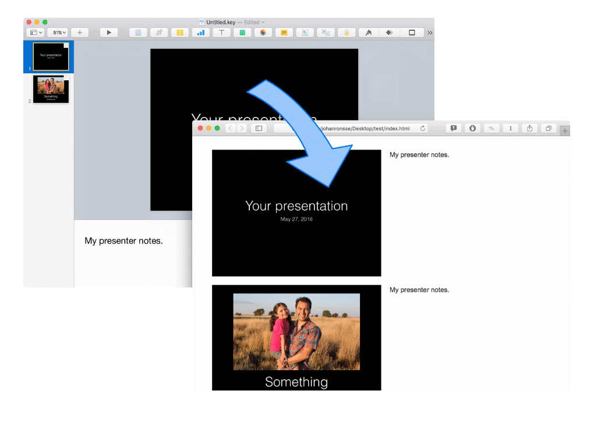
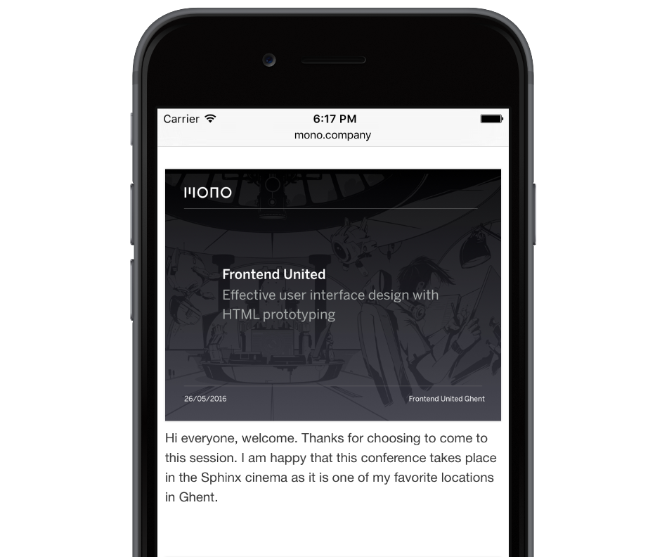

Clutter free.
No need to clutter your slides so people can make sense of them after the presentation. Keynote Extractor extracts your slides with their notes alongside. The result is a HTML and CSS package that you can upload to a web server to share your presentation online.

Made for mobile
The export prepares different sets of images so whenever your presentation is requested on a mobile device, only the small versions of the images are downloaded.